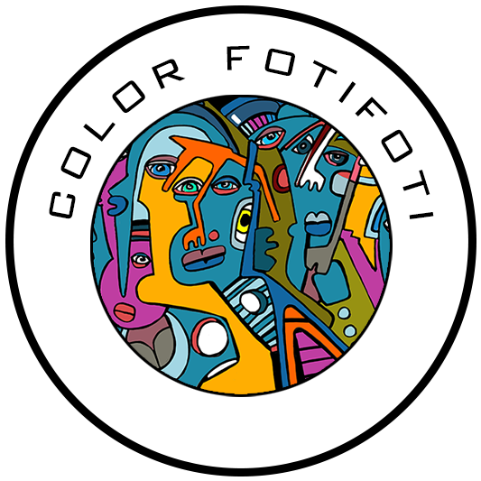
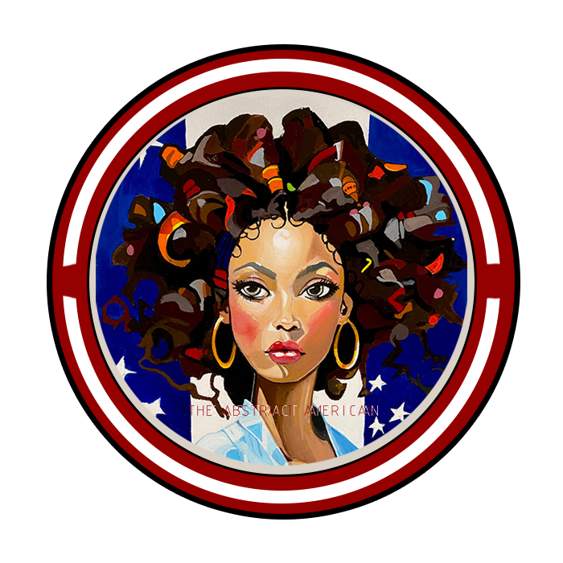
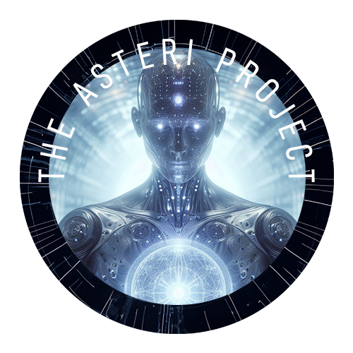

Poor People App

Features (In Development)
- PoorPeople.app is a platform in development
- Replacing inefficient bureaucracy with transparent technology
- Project explores AI-powered navigation & organizing tools
- blockchain-based infrastructure to serve people
- AI-assisted navigation of benefits and services
- Community-driven support network
- Blockchain infrastructure for transparency and efficiency
Color Foti Foti

Features
- artist website showcasing downloadable drawings
- Free screensaversl
- Explore, download, and support original artwork
- Dynamic gallery of downloadable drawings
- Multiple donation options: Bitcoin & PayPal
- Responsive grid layout
- Free screensavers for mobile & desktop
The Abstract American

Features
- Artist website showcasing original abstract paintings
- Smooth, dynamic full-page scrolling gallery
- About, Gallery, and Connect sections
- FotiFoti Art Agent automatically publishes new artwork to this gallery via the GitHub API
- Fully responsive — mobile, tablet, and desktop
Tech Stack
- HTML5 / CSS3 / Vanilla JavaScript
- GitHub Pages hosting
- Auto-updated by AWS Lambda via GitHub API (FotiFoti agent integration)
The Asteri Project

Features
- Under Construction
- Immersive web experience introducing The Asteri Project
- sci-fi narrative exploring nested simulations
- Interactive particle and energy wave effects on click
- Translucent UI elements enhancing the layered reality theme
- Engaging "Training Simulation" mini-game (desktop)
The Grillin Greek
Personal Project — Nostalgia & Brand Marketing Site
A mystery-comeback marketing site for a beloved Greek restaurant in Natick, MA. Built on a repurposed civic site infrastructure with a full brand overhaul — new identity, copy, palette, and product marketing strategy. Part portfolio showcase, part guerrilla marketing campaign.
Features
- Mystery comeback narrative — "Something's cooking again."
- 6-page site: Home, Our Story, The Food, The Menus, Press & Reviews, Stay in the Loop
- Full brand identity: warm charcoal/gold palette, Playfair Display serif typography
- Product teaser pages — Humtziki Sauce, Mom's Greek Dressing, Tzatziki, Grilled Salads
- AWS API Gateway + Lambda backend for interest capture and contact forms
- Menu archive gallery — placeholder structure for historical menu image uploads
- Interest signup form with product preference tracking
- Scroll-triggered fade animations, sticky header, mobile-first responsive layout
- Repurposed existing infrastructure — zero new backend cost
Tech Stack
- HTML5 / CSS3 / Vanilla JavaScript (no frameworks)
- AWS API Gateway & Lambda (serverless form handling, existing backend)
- GitHub Pages hosting with custom domain (thegrillingreek.com)
- Google Fonts — Playfair Display + Open Sans + Montserrat